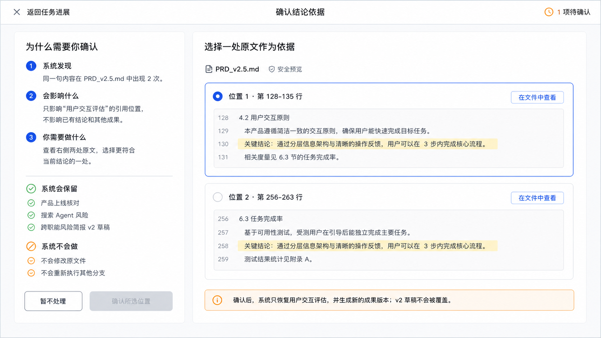

人机共驾：该继续的继续，只交出必要的一项
将上次会议的“人机边界系统化、多场景演示、指导手册”落实为同一套可评审合同。Demo 3 不另造 Agent，而是贯穿 Demo 1 的跨 Run 连续性与 Demo 2 的受限协作。
8结构化边界案例
4处理强度候选层级
3独立判断维度
0外部动作 / 模型调用
01 · 从参考界面中保留的设计要求
首屏只回答五件事：发生了什么、影响哪项工作、已经保留什么、现在谁来决定，以及确认后会发生什么。技术字段与回执放到可展开的次层，不要求普通用户先理解 Runtime。
左侧说明原因、影响与保留项；右侧并列真实候选与上下文；底部给出清晰的单一主动作。候选不预选，未选择不能确认。
“确认原文位置”“确定业务口径”“批准执行”“核验执行结果”必须是四种不同的交互，而不是一个万能确认按钮。

02 · 三条独立边界，决定不同接管方式
证据
这份结论可采用吗？
范围、来源修订、原文位置和冲突状态。位置明确不自动证明语义正确。
责任
谁应承担业务判断？
业务影响、敏感性、可逆性、专业责任与异常后果。不能只看模型置信度。
权限
这项动作允许执行吗？
身份、目标、范围和 Connector 能力。人的意愿不绕过服务器硬门。
回执
究竟发生了什么？
已请求、已记录、已采用与已执行分别展示，不以页面动画证明成功。
03 · 八个案例，一条共驾主线
| 边界 | 演示的交互差异 | 当前可复用基础 | 不能外推 |
|---|---|---|---|
| 重复原文 / 来源歧义 | 不预选，比较位置，确认后只恢复目标 Branch | DecisionRequest / EvidenceResolution | 位置选择不是语义证明 |
| 规则与观测冲突 | 先选初始口径，再看建议，决定与后续任务分开 | 有 contradiction Anchor 的 Finding review | 不是通用业务审批引擎 |
| CRM 外部写入 | 明确阻断，只有人工转交意向 | external_action=none 边界 | 没有 Connector / Permit |
| 不可逆生产操作 | 专业人工接管，保留影响与恢复条件 | 固定离线 SRE 提案边界 | 无 ES 连接、命令执行与生产审批 |
| 预算终态 | 同 Task 新 child Run，不能 resume 旧 Run | Task current pointer / continuation | 不是无限运行或在途 HTTP 续跑 |
| Agent 输出结构失败 | 无需用户改材料，授权局部重试 | analysis_output / 有界修复 | 重试不是质量改善证明 |
| Worker 部分未采用 | 保留 A/B，只处理 C；依赖汇总等待 | WorkUnit / Contribution / Branch Gate | 非分布式 Worker，返回不等于采用 |
| 文件通过、业务 Gate 未过 | 两种状态同时保留，不让绿灯盖过不得上线 | Artifact / business_gate_outcome | 非业务批准、非发布执行 |
04 · 本次需要会议决定的三件事
确认边界分类是否贴合真实办公责任
R0–R3 是方案候选分级。请业务方给出实际的高影响阈值、责任角色和升级条件，不能由模型自评代替。
确认优先落地范围
建议先落地“证据选择、Agent 自有恢复、预算续办、协作局部收敛”，复用当前 Runtime 合同；外部动作仅以阻断和人工接管材料展示。
确认验收证据与技术回溯门
自动化检验请求、版本、错误恢复和无副作用；目标用户研究再检验理解与错批。三个 Demo 验收后冻结版本，启动官方更新和同场挑战的技术回溯。
05 · 本轮做了什么，没做什么
已制作独立交互 HTML、规则矩阵、8 案例、指导手册与异常沙盘；已定向核对本地源码和三个官方来源。页面里全部数据均为设计样例。本轮未修改 Runtime、未创建真实 Task、未调用 Provider、未完成完整行业回溯、未验证目标用户效果、未接入外部动作。浏览器验证范围以 验证记录 为准。